キーボードはマウスと並んで，コンピュータを操作するときにもっとも良く使われる周辺装置（ペリフェラル）です．これがうまく使えないと，コンピュータそのものが嫌いになってしまうので，キーボードの練習にはちょっと時間を割きたいと思います．
コンソールのウィンドウを一度クリックしてください．そしてキーボードから typing とタイプし，その後 [Enter] キーを押してください．
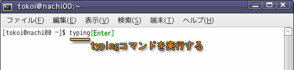
すると，次のような表示が現れます．表示にしたがって練習を進めてください．途中で終了するときは Ctrl-C（[Ctrl]キーを押しながら C のキーをタイプ）してください．
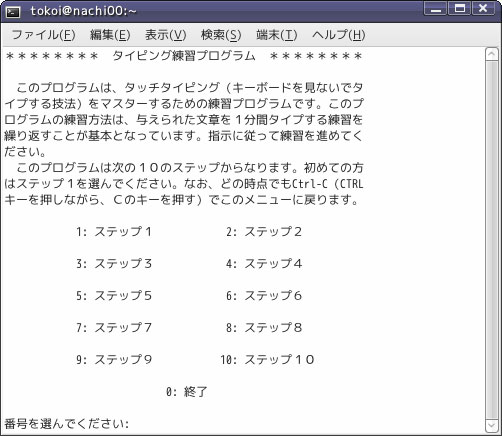
毎回１ステップずつ，１０～１５分くらい練習します．途中「５回繰り返せ」「３回繰り返せ」という指示があると思いますが，時間がないので１回練習したらそのまま次に進んでください．次のステップに移行する時に「次に進みますか」という問い合わせが出るので，とりあえずそこまで進んでください．
この講義の１２回目にタイピング能力のテストを行いますから，うまくできない人は空き時間を使って練習しておいてください．
VDT作業についてパソコンを使った作業は，それなりに疲れます．「VDT作業について」を参照してください．
- 空調を調整しましょう（温度、湿度、風速）．周囲の人や教員にも相談してください
- ディスプレイを調整しましょう（映り込み，角度，位置，輝度，コントラスト）
- 姿勢（ディスプレイとの位置，椅子の高さ調整）
- 作業時間と休息（休憩は１時間に10分以上意識してとるようにしましょう）
- ときどき周りの人と会話するなどして，気分転換しましょう
- ストレスや不眠が強くなったら，まわりの人に相談したり，気軽に保健管理センター等を受診しましょう
前回，既に Thunderbird を使ったメールの送受信を行っていますが，ここで改めてメールについて取り上げます．
コンピュータ（とネットワーク）を使ってコンピュータの利用者の間でメッセージの交換を行うことができます．これにはいくつかのものがありますが，このうち電子メール（Eメール，あるいは単にメール）が現在最も広く使用されています．これはメッセージを書いたテキストファイルを相手に送りつける（相手のコンピュータにコピーする）メカニズムです．以降では，電子メールのことを単にメールと言う事にします．
手紙を出すには宛名と住所を書かなければならないのと同じように，メールを送る時もメッセージの宛先を指定する必要があります．この宛先をメールアドレスと言います．メールアドレスの "@"（アットマーク)より右側の部分 （center.wakayama-u.ac.jp のところ）をドメイン名と言います．これは "@" より左側にある "利用者" の "住所" に相当します．jp:japan～日本の，ac:academic～学校関係の，wakayama-u～和歌山大学の，center～システム情報学センター，の誰々，という具合になります．
Thunderbird では，「受信トレイ」や「ごみ箱」の他に「下書き」や「送信済み」などのフォルダ（メールの置き場所）も自動的に作成されます．しかし演習室のシステムでは，それらが Thunderbird の画面上に現れないことがあることがあるようです．もしこれらのフォルダが現れていないなら，アカウント名をマウスの右ボタンでクリックして現れるメニューから「購読」を選んで，「Drafts」と「Sent」に購読するように設定した後（購読していればチェックが入っています），一旦 Thunderbird を終了してみてください．
もし，それでも「下書き」や「送信済み」が現れないようなら，以下の手順ですべてのフォルダを表示するようにしてみてください．まず，Thunderbird の左側の枠のメールアドレスのところを選択し，「このアカウントの設定を表示する」をクリックしてください．
次に左側の枠の中から，「サーバ設定」を選び，右側の「サーバ設定」の枠の中にある「詳細」をクリックしてください．
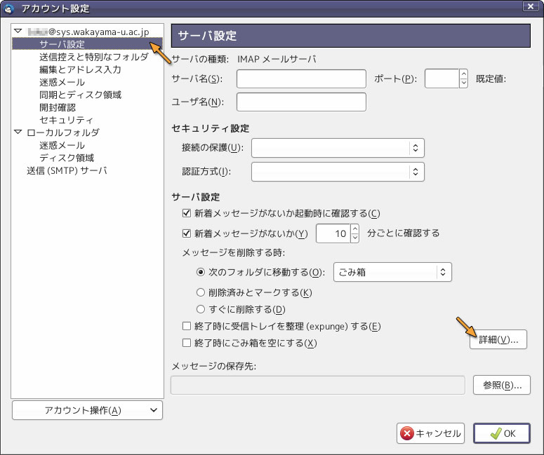
「アカウントの詳細設定」にある「購読しているフォルダのみ表示する」に付いているチェックマークを消してください．その後「OK」をクリックしてください．
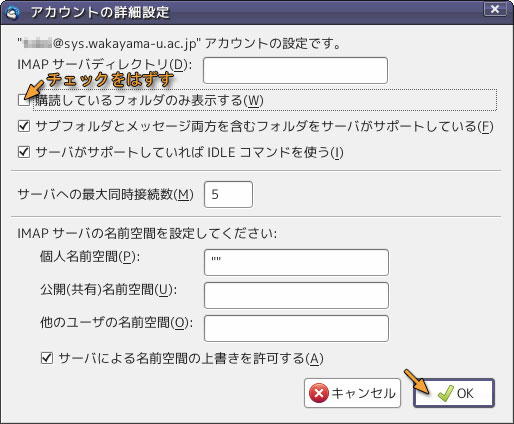
設定が終わったら「アカウント設定」のウィンドウの「OK」をクリックして，ウィンドウを閉じてください．その後 Thunderbird を一旦終了してください．
ここのシステム（Linux 側）で使用できるメールを読み書きするためのソフトウェア（メールクライアント，メール・ユーザ・エージェント，メールソフト）には，以下のものがあります．興味があれば使ってみてください．
| メールの読み書きに使うソフトウェア | |
|---|---|
| mail/Mail | もっとも基本的なものでコマンドで使用する（演習室では使用不可） |
| Thunderbird | 高機能なメールソフト（Windows/Mac 版あり） |
| Evolution | Windows の Outlook に似たメールソフト（カレンダー機能あり） |
| Sylpheed | Vine Linux 標準のもの（Windows 版あり） |
| RMAIL | emacs に組み込まれている歴史の長いもの（演習室では使用不可） |
| Mew | emacs に組み込まれているもの（初期設定をしないと使えません) |
| Wanderlust | emacs に組み込まれているもの（初期設定がしてあります） |
このうち Sylpheed は，日本人の手によって開発されているもので，Windows の Outlook Express に似た雰囲気を持っています．Windows 版もあります．また Wanderlust や Mew は非常に有名で高機能なテキストエディタの emacs の "中" で使用できるものです．この二つも日本人が開発しています．
メールの転送設定はシステム情報学センターのホームページから行えます．「各種設定」の「ユーザ設定情報」を選んでください．
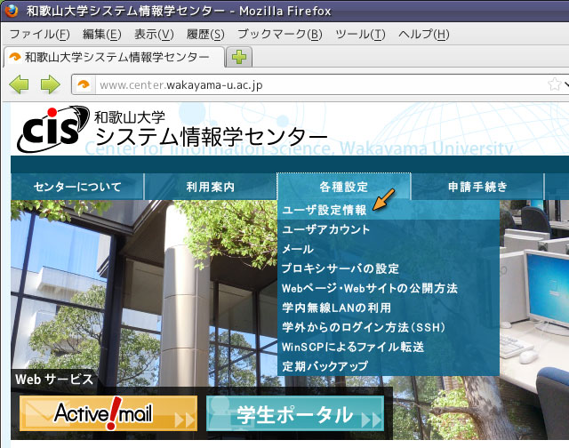
するとユーザ名とパスワードを聞いてきます．コンピュータ利用承認書に書かれているユーザ名とパスワードを指定して，「OK」をクリックしてください．
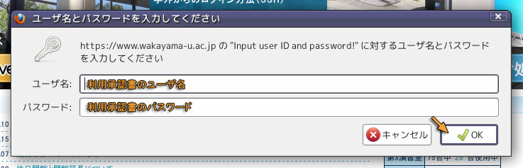
「利用者情報管理」のページが現れます．パスワードの変更は，ここでできます．メールの転送先を設定するには，左の「設定変更等」の文字をクリックしてください．
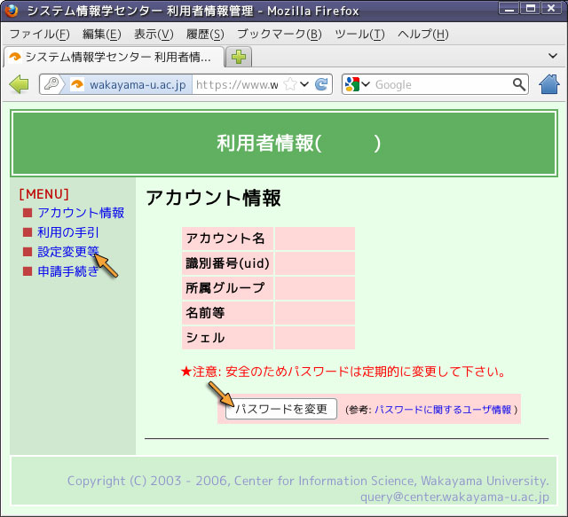
「メールの転送先を変更」を選んでください．
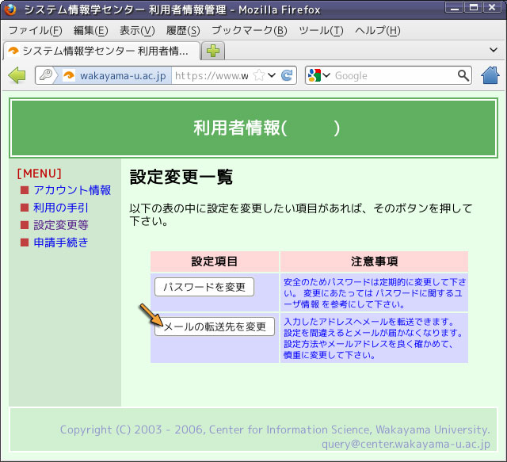
コンピュータ利用承認書のユーザ名とパスワードを指定して，「ログイン」をクリックしてください．
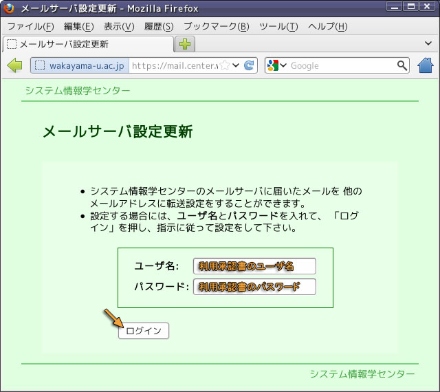
転送先のメールアドレスを指定してください．転送先は複数設定できます．「メールサーバにメールを残しつつ転送する。」にチェックを入れておかないと大学内でメールを読むことができなくなりますから，必ずチェックを入れておいてください．その後，「転送先を設定」をクリックしてください．
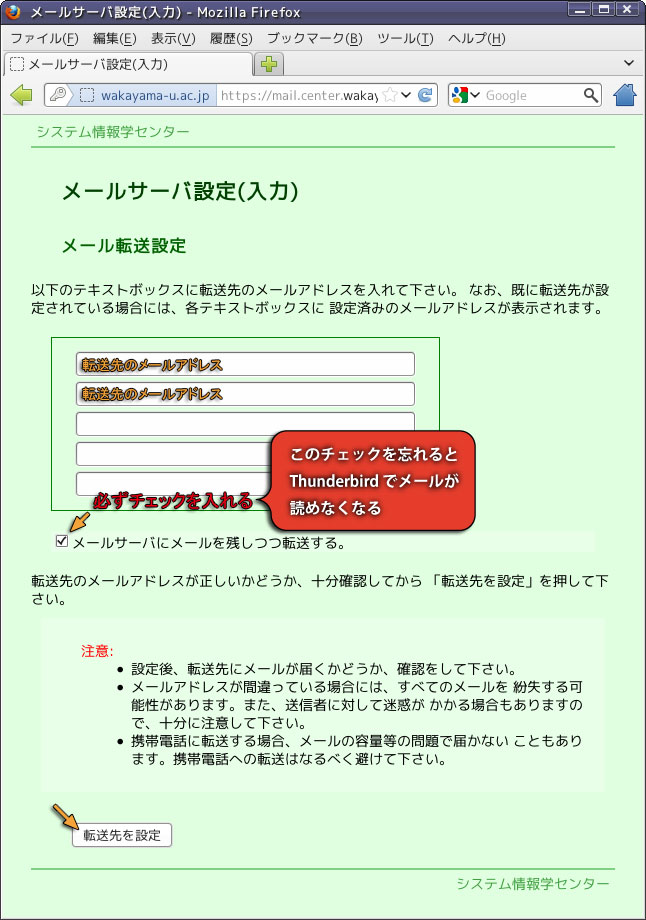
オペレーティングシステムは，コンピュータ自体を制御するソフトウェアです．コンピュータの利用者が実際に使用するワードプロセッサなどのアプリケーションソフトウェアと，CPU やメモリ，ディスプレイなどのコンピュータのハードウェアとの仲立ちをします．基本ソフトウェアあるいはシステムソフトウェアとも呼ばれます．パソコン用のオペレーティングシステムには Microsoft 社の Windows のシリーズのほか，FreeBSD，そして Linux などがあります．また Apple 社の iMac や MacBook などでは Mac OS X が使用されています．
オペレーティングシステムを使用する機器CPU を内蔵するほとんどの装置で，オペレーティングシステムが利用されています．携帯電話では ITRON や REX OS，Symbian OS などが使用されています．Linux を使用しているものもあります．Apple 社の iPhone では Mac OS X に似た iOS が使用されています．これ以外のスマートフォンでは，Microsoft 社の Windows Phone や Linux をもとに作られた Google 社の Android などが使用されています．またカーナビでも ITRON や Linux のほか，Microsoft 社の Windows CE for Automotive などが使用されています．
オペレーティングシステム（略して OS）には，大雑把に言って次の２つの役割があります．
コンピュータは CPU をはじめ，メモリ，ハードディスク，ディスプレイ，キーボード，マウスなど，数多くの部品で構成されています．このような部品や，その部品の集まりであるコンピュータの本体のことを，私たちはコンピュータのハードウェアと呼んでいます．
私たちがコンピュータを使うためには，このハードウェアの機能をうまく組み合わせることが必要になります．例えばワープロに１文字打ち込むというなんてことはない操作ですら，コンピュータがキーボードでタイプされた文字が何か調べ，それを画面に表示し，そして記憶している文書の中に挿入するというさまざまな知識（あるいは手順）を，コンピュータ自身が知っているからこそ実現できるのです．このような知識のことを，私たちはコンピュータのソフトウェアと呼んでいます．
このソフトウェアのうち，利用者が実際に仕事をするために使うワープロなどのソフトウェアのことを，アプリケーションソフトウェアと呼びます．これに対してオペレーティングシステムは，コンピュータのハードウェア自体を制御したり，アプリケーションソフトウェアがハードウェアの機能を使うときに，その仲立ちをするための知識として働くソフトウェアです．
コンピュータの個々の部品や，それらが果たす機能（CPUなら計算する機能，メモリやディスクなら記憶する機能），それに計算に使える時間などは有限ですから(無限に速く計算することもできないし，記憶できる情報の量にも限界がある)，これらは限りある資源のようなものです．したがって，これらをコンピュータの資源（リソース）と呼んだりします．オペレーティングシステムは，この資源を効率よく使えるように管理します．
また，コンピュータのハードウェアは電気信号によって制御されますが，例えば画面に文字を表示するのに，アプリケーションプログラムがいちいちこの電気信号を使ってハードウェアを制御していたのでは手間がかかりすぎます．そこで，オペレーティングシステムがそのような作業をまとめて行い，アプリケーションプログラムはオペレーティングシステムに対して「画面に文字を表示する」という依頼を送るだけ済むようにします．これをオペレーティングシステムによる機能の抽象化と言います．
Unix（ユニックス）は Windows などが普及する前からある，オペレーティングシステムの一種です．最初のものは 1969 年にアメリカの電話会社 AT&T で開発されました．本来の（商品としての）UNIX には，Sun 社（Oracle 社に買収）の Solaris のほか，Hewlett Packerd 社の HP-UX，IBM 社の AIX などがあります．これらは業務用の（個人用ではない）コンピュータで使用されています．しかし，Unix という名前の最も重要な役割は，それがオペレーティングシステムの一つの考え方を表すことにあります．一般に Unix と言ったとき，それは特定の製品を示すものではありません．
Unix という考え方をもとに，これまで数多くのオペレーティングシステムが作られました．カリフォルニア大学バークレー校は初期の Unix を改良して BSD という系列のオペレーティングシステムを開発しました．現在の Mac OS X は，この BSD をもとにして作られています．他にも Idris や Coherent，UNOS など，さまざまなものが生まれました．これらはいずれも本来の UNIX と同じか，非常によく似ていたので，Unix 的な (UNIX system-like)，あるいは Unix 系のオペレーティングシステムと呼ばれます．Microsoft 社もかつて XENIX という Unix 系 OS を販売していました．実は Windows ですら，Unix の考え方の多くを参考にして構成されています．
現実には，現在のパソコンの OS のうち Microsoft 社の Windows で無いものは，ほとんど Unix 系 OS です -- 本当は Unix とは出自の異なる OS として，国産の超漢字 (BTRON) のほか，日本人が開発しているものでも MonaOS とか OSASK とかいろいろあります．
このため Unix は，単に現在のオペレーティングシステムの手本であるだけでなく，現在に至るコンピュータサイエンスの成果の多くを支えてきた基盤でもあるのです．皆さんが「情報処理II」以降で学習するプログラミング言語 C も，Unix の発展とともに普及しました．Unix という考え方は，コンピュータサイエンスを学ぶ上で欠かすことのできないものなのです．
Linux（リナックス，リヌックス）は，このような Unix の考え方をもとに，一から作られた独自のオペレーティングシステムです．この大きな特徴は，それが特定の組織によって開発されているものではないところにあります．この詳細については後の講義で解説する予定ですが，本来の Linux はオペレーティングシステムの核（カーネル）と呼ばれる部分しかありません．それにさまざまなソフトウェアを組み合わせて，一つの Unix 的なオペレーティングシステムとしてパッケージ化したものが，現在 Linux という名前で流通しています．
どうして講義を Windows ではなく Linux でやるのかこれは毎年聞かれる質問なのですが，簡単に言えば，それを教える必要があると考えているから，です．この情報処理Iをはじめ，後に続く情報処理II，情報処理IIIなどは，講義内容がパソコンすなわち Windows の使い方を教えることを目的にはしていないからです．
確かに，かなり多くの人にとって「パソコン＝Windows」であり，「Internet Explorer という Web ブラウザ＝インターネット」なのかもしれませんし，Windows の使い方を教えることは，それが必要な人にとっては重要なことだとは思います．でも，世の中の情報処理システムはそれだけはないというのも事実です．例えば Mac OS X は Unix ですし，iPhone の iOS も Unix です．
皆さんはここでエンドユーザではなく作り手としての立場で学びます．そこでは使い方よりも作り方を学ぶ方が重要です．そのとき，個々のアプリケーションの使い方を教えるより，その根底に流れるコンピュータサイエンスの成果を知る方が，我々は重要だと考えています．本文で述べた通り Linux がベースとしてる Unix は，Windows をはじめ，現在のコンピュータ技術を構成している多くの考え方の基本となっているものです．
この Linux のパッケージ（ディストリビューションと呼びます）を作る組織がいくつもあるため，異なる名前のついた Linux が数多く存在します．この講義で使用する Vine Linux も，そのようなディストリビューションの一つです．日本でよく利用されているディストリビューションには以下のようなものがありますが，他にも無数にあります．これらは DisroWatch.com で探すことができます．
もし使っていない古いパソコン (Windows PC) を持っているなら，自分で Linux をインストールして使ってみてください（今使っているパソコンに Windows と共存させる形でインストールすることもできますが，初心者には勧めません）．お勧めのディストリビューションは，大学と同じ環境を作りたいなら Vine Linux，最先端を追っかけたいなら Fedora，道具として Linux を本格的に使いたいなら Ubuntu か CentOS，インストールせずに試しに使ってみたいなら KNOPPIX，そして Linux の本当の楽しさ（と苦労）を知りたいなら Plamo でしょうか（異論は認めます）．
ちなみに Mac の場合は，Mac OS X 自体が Unix 系 OS なので，あらためて Linux を入れなくても同じような環境を使うことができます．「アプリケーション」フォルダの中の「ユーティリティ」フォルダに入っている「ターミナル」や 「X11」 を起動してみてください（X11 は OS のインストールディスクから Developer Tools と一緒にカスタムインストールする必要があるかも知れません）．もし Unix としての機能が不足するようなら，Fink や MacPorts, あるいは homebrew を使ってソフトウェアを追加してください．
パソコンの使い方は教えるつもりはないと言った舌の根も乾かないうちに，Linux で使えるワープロやプレゼンテーションソフトなどの紹介をします．こういう事務的な情報処理に使用されるソフトウェアのパッケージのことを，オフィススイートとかオフィスソフトなどと呼びます．
しかし，単に使い方の説明をすることが目的ではなく，ここではスタイルシートやスライドマスターという機能というか考え方を知ってもらうことを目指します．
Windows などでは Microsoft Office やジャストシステムのソフトウェアが有名ですが，これらには Linux 用の物が用意されていません．Linux 上で使用できるオフィススイートには， オープンソースで開発されている KOffice や Gnome Office などがありますが，ここではこれらと同様にオープンソースで開発されている LibreOffice.org を取り上げます．これは OpenOffice.org をバックアップしてきた Sun 社が Oracle 社に買収されたのを機に，OpenOffice.org から派生したものです．
LibreOffice.org は LibreOffice.org から無償で入手することができます．これには Linux 版のほかに Windows 版や Mac OS X 版もあります．いずれも Microsoft Office との互換性を持っています．
まず，画面左下の「Menu」から，「オフィス」→「LibreOffice.org Writer」の順に選んでください．
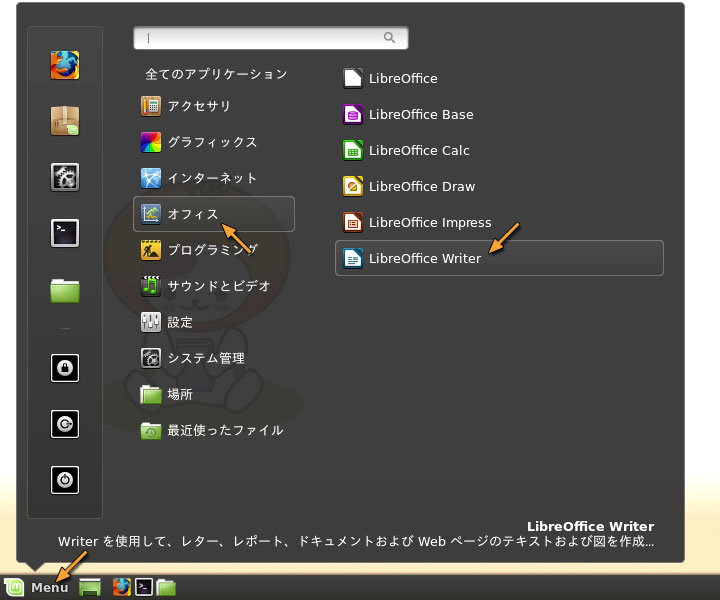
LibreOffice.org の起動中は数秒間スプラッシュウィンドウが表示されます．
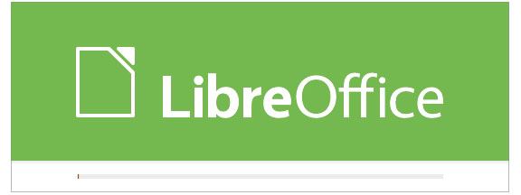
"Writer" の画面は，次のようなものです．
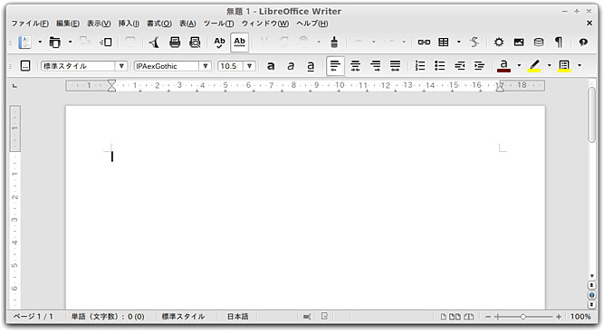
このウィンドウの左側にある四角いボタンをクリックすると，「スタイルと書式」と書かれた小さなウィンドウが開かれます．このウィンドウは，このボタンをクリックするたびに，開いたり閉じたりできます．
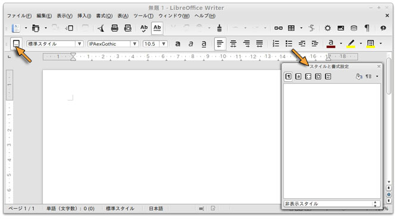
それでは，ここでレポートを書く場合について考えてみます．レポートの最初には題名と著者の名前を書きます．「段落スタイル」の一番下の欄（「自動」と表示されているところ）をクリックして，ポップアップメニューから「章のスタイル」を選んでください．
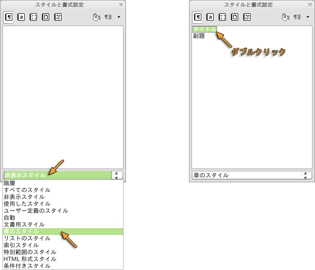
すると「タイトル」と「副題」という２つのスタイルが表示されるので，「タイトル」をダブルクリックしてください．文書のウィンドウのカーソル位置が用紙の中央に移動します．また，そこで文字をタイプすると，文字の大きさや自体がタイトル用のものに切り替わっていることがわかります．
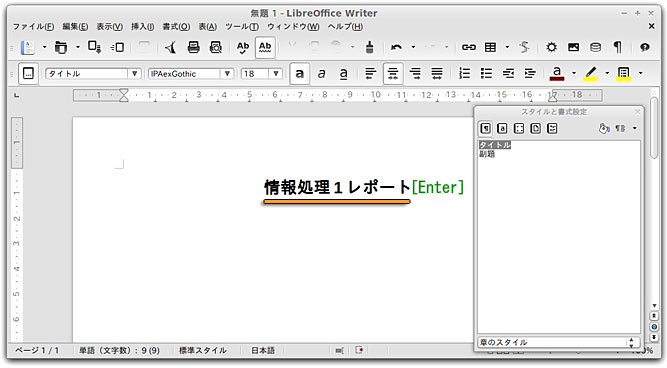
タイトルをタイプした後 [Enter] をタイプすれば改行します．このとき次の行のスタイルは，自動的に「副題」に切り替わります．
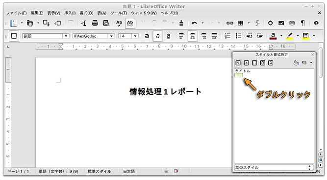
そのまま学籍番号と名前をタイプして，改行（[Enter] をタイプ）します．すると今度はカーソルが文書の左端に移動します．
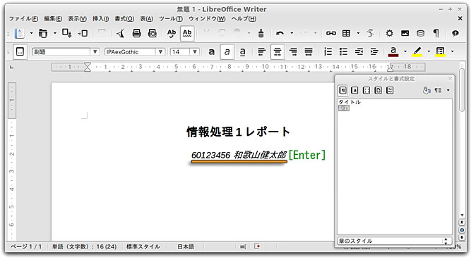
ここで再び「スタイルと書式」の一番下の欄をクリックして，今度は「自動」を選んでください．スタイルが「本文」に切り替わっているはずです．
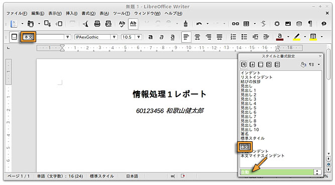
ここで，「スタイルと書式」の中の「見出し１」をダブルクリックします．
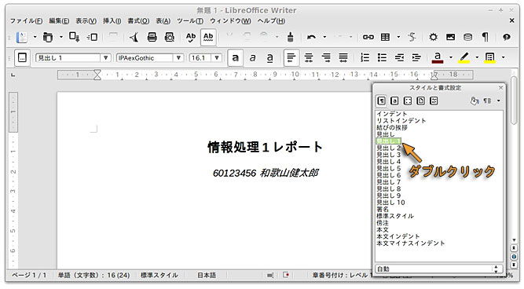
見出しを書いて改行すると，スタイルは再び「本文」に戻ります．
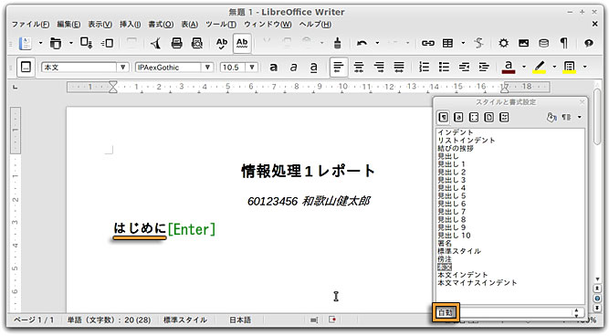
本文を書いてみます．「本文」のスタイルでは，改行すると段落の間に少し間隔が空きます．
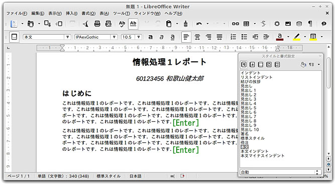
ここで，「スタイルと書式」の中の「本文」を，マウスの右ボタンでクリックし，現れたポップアップメニューから「変更」を選んでください．
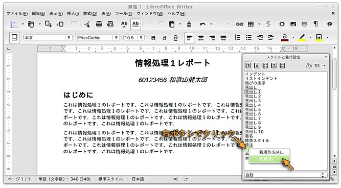
本文の体裁を，日本語の文章らしく最初の行を字下げするようにします．「インデントと間隔」のタブを選んで，「最初の行」の下にあるチェックボックスにチェックを入れてください（「最初の行の右側の欄に，字下げの長さを指定しても構いません）．また，行間も１．５行にしてみましょう．
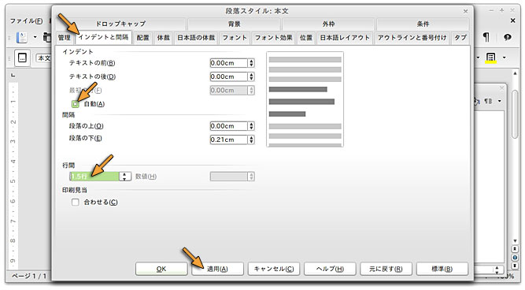
次に「配置」のタブを選び，「オプション」の中から「両端揃え」を選んでください．
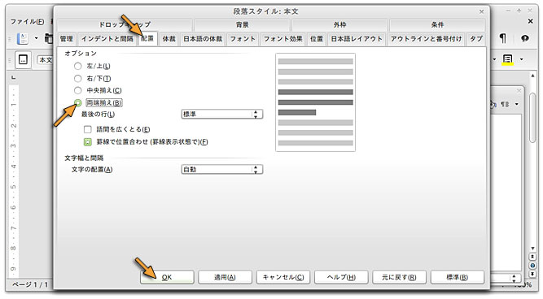
最後に「OK」をクリックすると，本文の体裁が全部変更されているはずです．
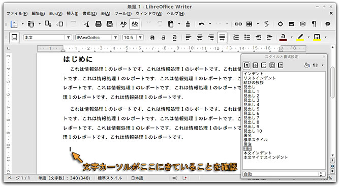
新しい見出しを追加します．メニューバーの左側にあるプルダウンメニューの▼マークをクリックして，メニューから「見出し１」のスタイルを選んでください．
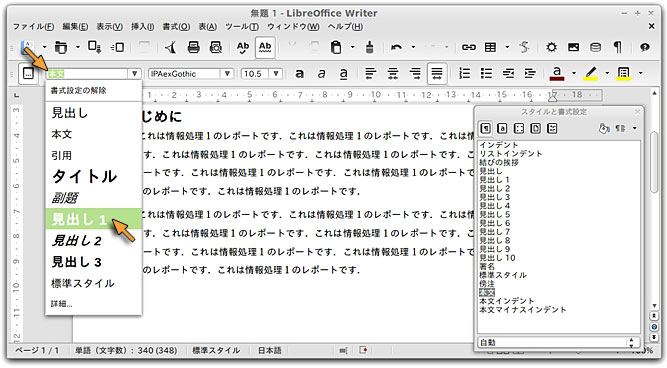
見出しを書いてください．そのあと，その見出しのところにカーソルを戻して置いてください．
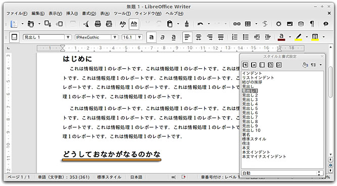
「ツール」メニューから「章番号付け」を選んでください．
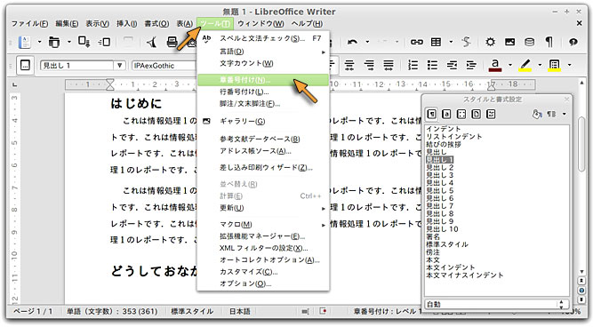
「番号付け」のタブを選んで，「段落スタイル」に「見出し 1」を，「番号」に「1、2、3、...」を選んでください．そのあと，「OK」をクリックしてください．
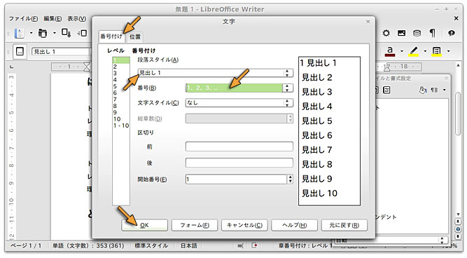
すると，見出しに自動的に番号が振られます．見出しの順番を変えると章番号も自動的に変わりますから，論文などで章番号を管理する手間が省けます．
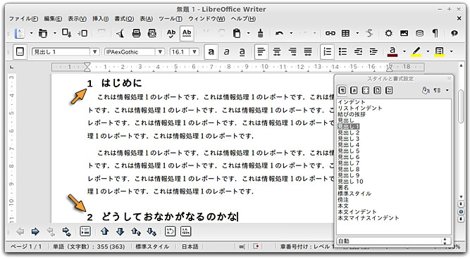
それでは，ここで Writer を終了します．「ファイル」メニューから「終了」を選ぶか，「閉じる」ボタンをクリックしてください．
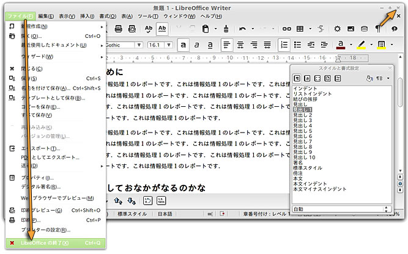
すると，作成した文章を保存するかどうか利いてきます．「保存」をクリックしてください．
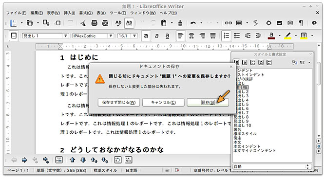
「名前」のところを report に書き換えた後，「保存」をクリックしてください．これで report.odt というファイルが作成されます（「名前」の拡張子 .odt は自動的に追加されます）．
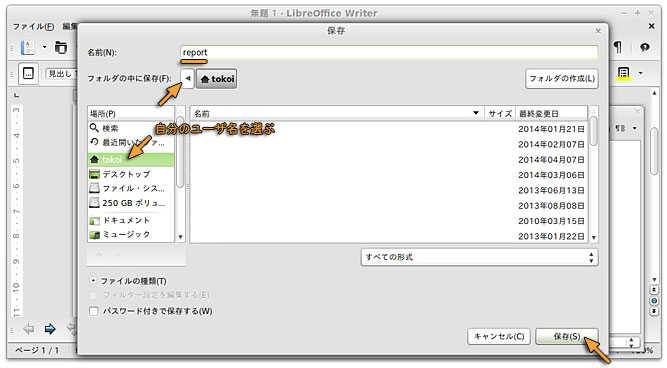
LibreOffice.org には，他にも様々な機能があります．詳しいことはウィンドウの上部にある「ヘルプ」を参照してください．
スタイルシートこのように，文書のスタイル（書式）に名前を付けて管理するものをスタイルシートと呼びます．スタイルシートは最近のワープロソフトの重要な機能であるほか，この考え方は Web ページのレイアウトにも導入されています（第６回）．スタイルの制御はスタイルシートを使用しなくても可能です．しかし，論文など長文の文書を作成する場合に局所的なスタイル指定を行ってしまうと，文書のレイアウトに統一感を持たせてスタイルを変更することが困難になります．
なお，この講義のほか，後に続く「情報処理II」や「情報処理III」などでは，このようなワープロソフトはまったく使用しません（だったら説明するなって？）．その代わり，レポートや論文，あるいはプログラムなどのテキストデータ（文字データ）の作成にはテキストエディタを用います．この講義で扱う文書はプログラムのソースファイルや Web ページの HTML ファイルが中心になりますが，レポートや論文も第８回で解説する LaTeX を用いて作成することができます（３・４年次に配属される研究室によっては，卒業論文を LaTeX で作成することを義務付けているところもあります）．
Impress は Microsoft の PowerPoint に相当する，プレゼンテーション用のソフトウェアです．作成したスライドは Impress 上で再生できるほか，Web ページ，PDF (Portable Document Format) ファイル，それに Adobe Flash 形式でも出力できます．「アプリケーション」から，「オフィス」→「LibreOffice.org 2.0 Impress」の順に選んでください．
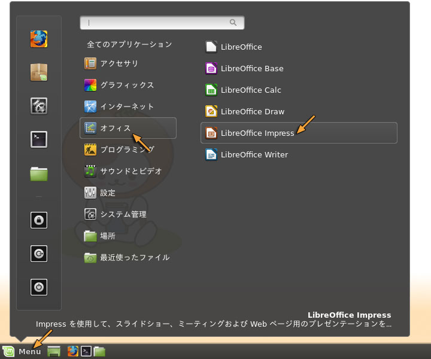
Impress の場合は，始めに「プレゼンテーションウィザード」が起動します．あらかじめ用意されたスライドのデザインを使ってスライドを作るなら「テンプレートから」を選択しますが，ここでは自分でデザインすることにして，「白紙のプレゼンテーション」を選んで「次へ」をクリックしてください．
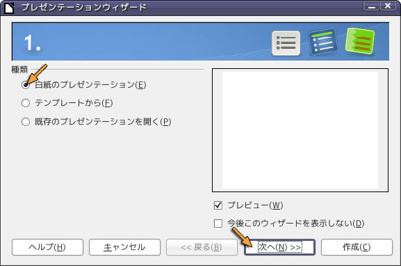
プレゼンテーション背景は，後で自分で作成するので，このまま「次へ」をクリックしてください．
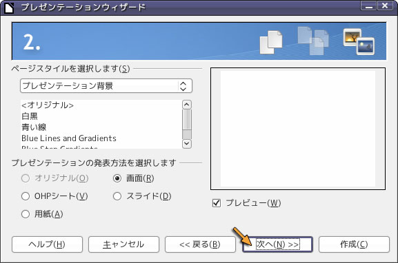
画面の切り替え効果や，切り替えの速度を選んで，最後に「作成」をクリックしてください．
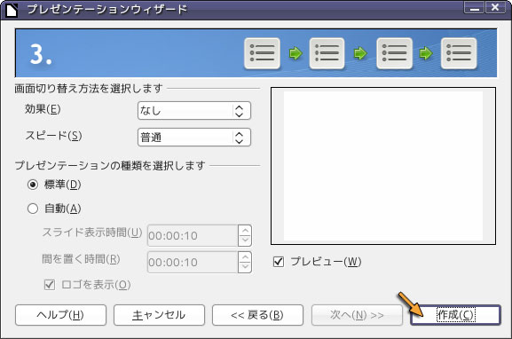
最初になにもレイアウトされていない白いページの編集画面が現れます．
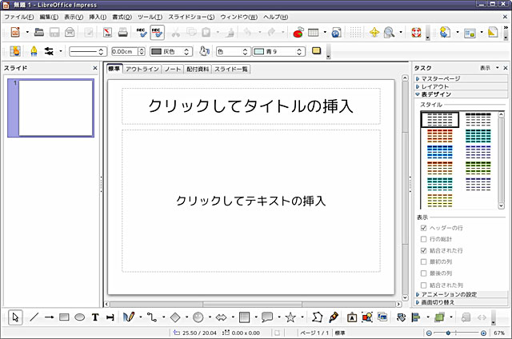
真っ白いページというのもなんなので，背景を変えてみることにします．すぺてのページで背景を共通にするために，「マスター」の背景を変更します．「表示」メニューから「マスター」→「スライドマスター」の順に選んでください．
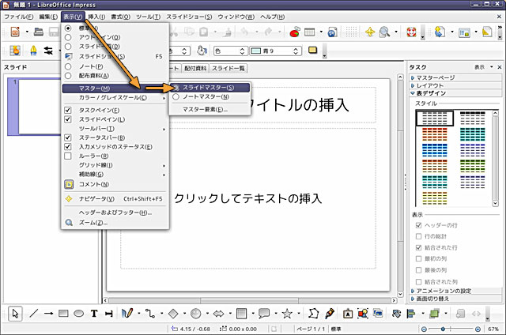
「マスター」はすべてのスライドの基本的なレイアウトとして使用されます．もちろん，スライドごとにレイアウトを変更することもできますが，マスターのレイアウトにあわせておけば，全体として統一感のあるスライドになります．
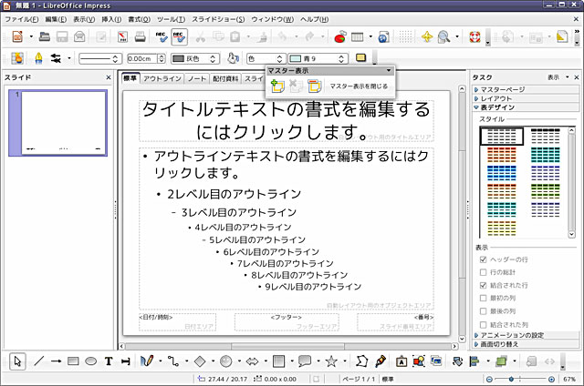
Writer と同様に「スタイルと書式」ウィンドウを呼び出し，「背景」のスタイルをマウスの右ボタンでクリックして，「変更」を選んでください．
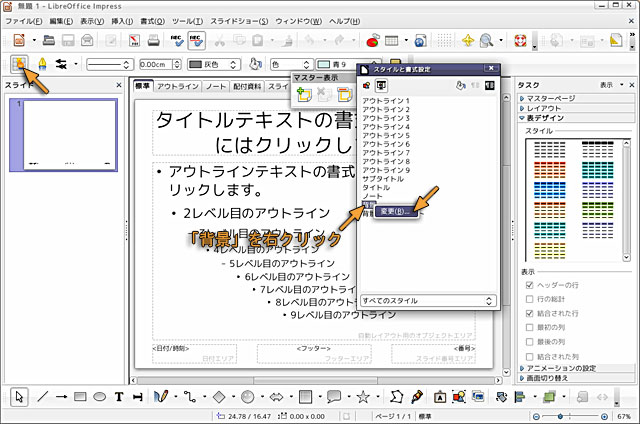
「表面」のタブの「塗りつぶし」から「ビットマップ」を選びます．
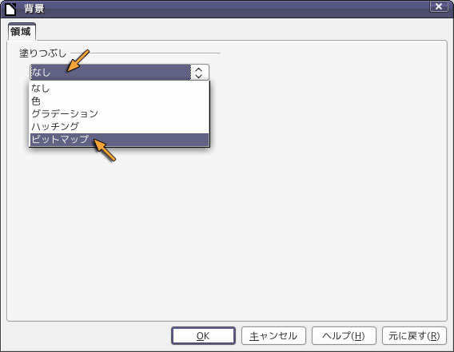
好きな画像を選んだ後，「OK」をクリックしてください．
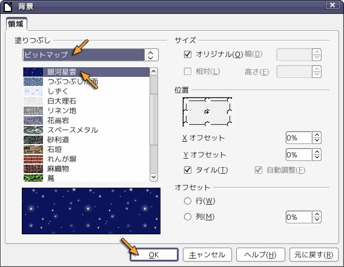
選んだ画像が背景に設定されます．この上に図形を描いてみます．ウィンドウの左下から，描く図形を選んでください．
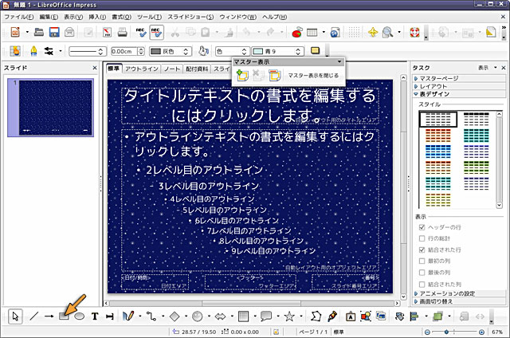
ウィンドウの上部にあるツールバーで図形の色や線の太さなどの属性を設定します．このボタンのうち，右側に▼があるものは，その▼をクリックすると，さらに選択肢が現れます．
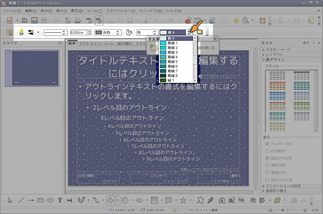
画面の右下にある四角形のボタンは，図形の重なりの順序を変更するときに使います．これを使って描いた図形を最背面に移します．
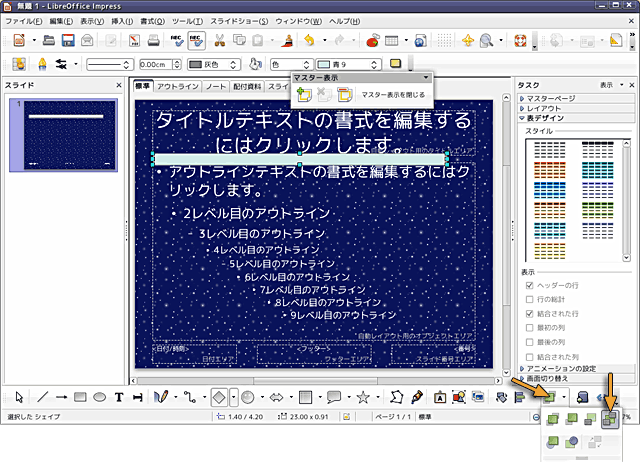
選択されている図形が文字の背後に移動します．
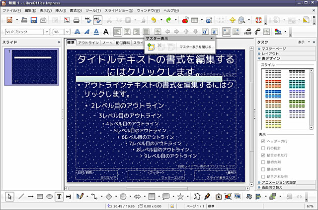
文字の字体（書体）などを変更するときは，「Ｔ」の形のボタンを選びます（文字枠をクリックすれば自動的に選択されます）．変更したい文字（枠）をマウスで選択してから，字体や文字サイズなどを選んでください．なお，「タイトルテキストの書式を編集するにはクリックします。」の文字は字体を表示するためのサンプルですので，文字そのものを変更しても意味はありません．
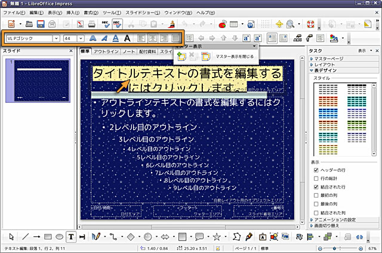
背景のレイアウトができたら，通常のページの編集に戻ります．「マスター表示を閉じる」をクリックしてください．
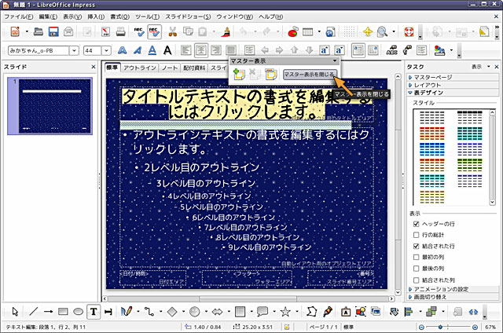
通常のページの編集に戻ります．次にスライドのタイトルページを作りますので，ウィンドウの右側の枠の「レイアウト」をクリックして，その中のタイトルページのレイアウトを選んでください．
通常のページにあるタイトルの枠とテキストの枠のそれぞれをクリックして，文字をタイプします．タイプできたら，ウィンドウの右上の「スライド」のボタンをクリックして次のスライドを作成します．
新しいページのレイアウトを選びます．一番よく使われる「タイトル，コンテンツ」のレイアウトを選択します．
先ほどと同様に，タイトルとアウトラインの枠をそれぞれクリックして，文字を入力します．アウトラインでは，[Tab] (タブ)キーを使って「レベル」を制御します．[Tab] をタイプすればレベルが下がり，[Shift] を押しながら [Tab] をタイプすればレベルが上がります．
作成した文書やスライドを保存するには，「ファイル」メニューから「保存する」を選ぶか，フロッピーディスクのアイコンをクリックしてください．「名前をつけて保存」というウィンドウが現れたら，「名前」のところを profile に書き換えた後，「保存」をクリックしてください．これで profile.odp というファイルが作成されます（「名前」の拡張子 .odp は自動的に追加されます）．
既存のプレゼンテーションを開くなお，保存した Impress のスライドは，次回 Impress を起動したときに「プレゼンテーションウィザード」で「既存のプレゼンテーションを開く」を選べば，もう一度開くことができます．
LibreOffice.org で作成した文書やスライドは，他のアプリケーションで使用できる形式でエクスポートできます．「ファイル」メニューから「エクスポート」を選んでください．
エクスポートする形式を選びます．ここでは Macromedia Flash 形式で保存するので，"Macromedia Flash (SWF) (.swf)" を選んでください．Impress で作ったスライドを Macromedia Flash 形式で出力すると，こういうものが得られます．また，PDF (Portable Document Format) 形式で出力すると，こんなものが得られます．
それでは Impress を終了します．「ファイル」メニューから「終了」を選ぶか，「閉じる」ボタンをクリックしてください．
新入生の皆さんに対して，アンケートを実施しています．ご協力をお願いします．まだ入力していない人は，明日までの空き時間に LiveCampus のホームページの上部にある「アンケート」をクリックしてください．

以下のものをメールで tokoi@sys.wakayama-u.ac.jp に送ってください．メールの件名 (Subject) は shori1-02 にしてください（そうしないと採点できません）．期限は次週の水曜日中までです．
メールにファイルを添付する方法デスクトップ（画面の背景部分）にある自分のユーザ名のフォルダのアイコンをダブルクリックすれば自分のファイルの一覧が表示されますので，その中から添付したいファイルを見つけて，作成しているメールの宛先部分にドラッグ＆ドロップしてください．